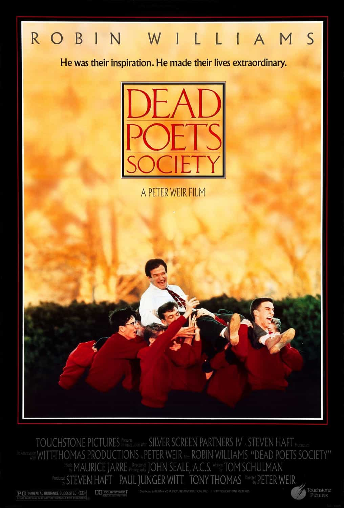

Dead Poets Society
1989
Dead Poets Society was recommended to Dex by his 9th grade English teacher when he told her he was battling inner turmoil concerning growing up, conformity and loneliness. He relates both to the main character, as well as to his roommate and best friend played by Ethan Hawke. To this day, he still weeps during the final scene.